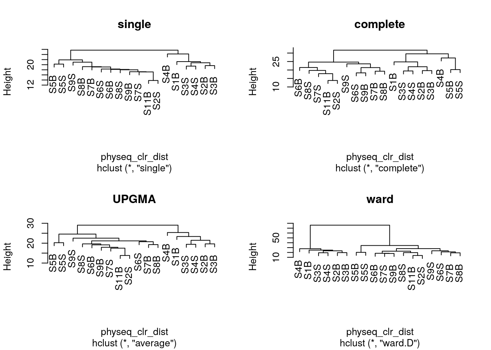
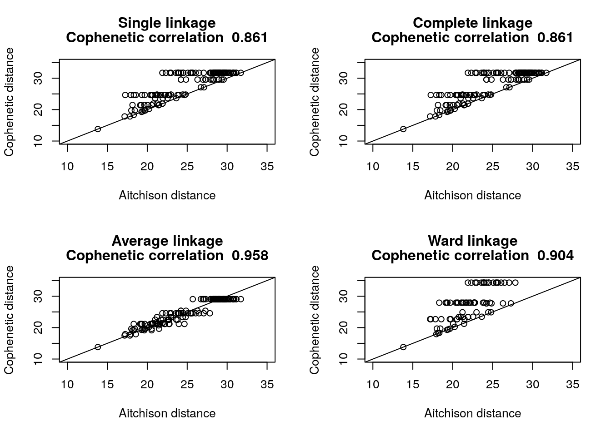
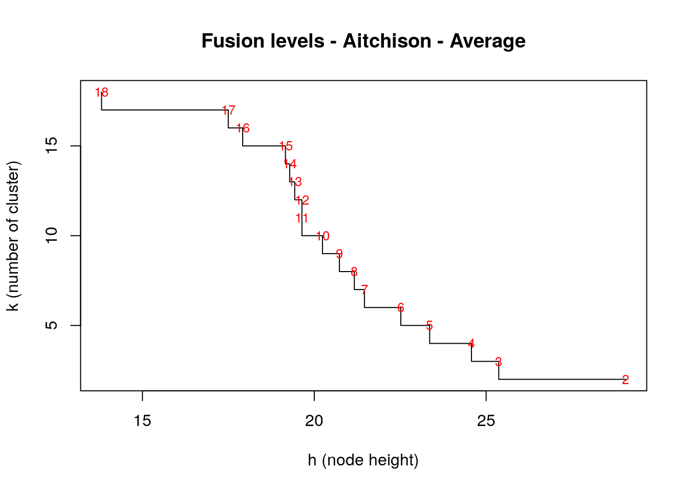
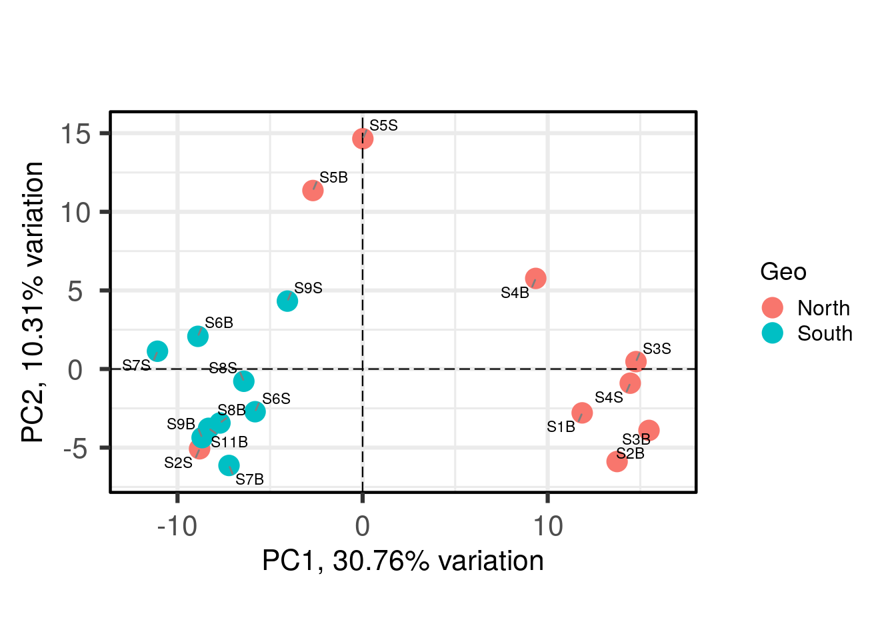
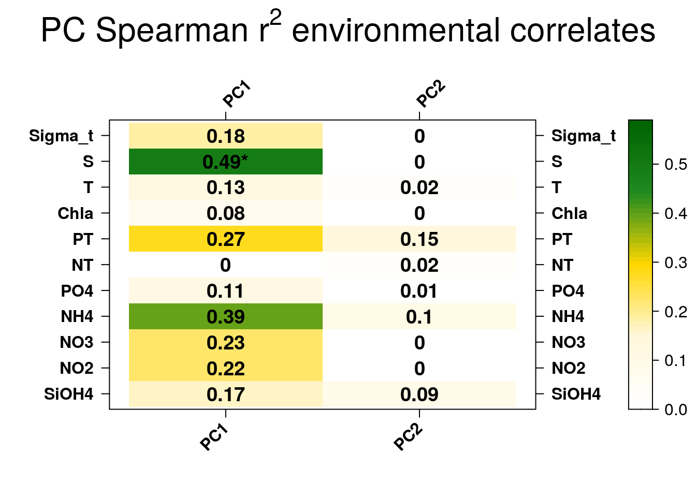
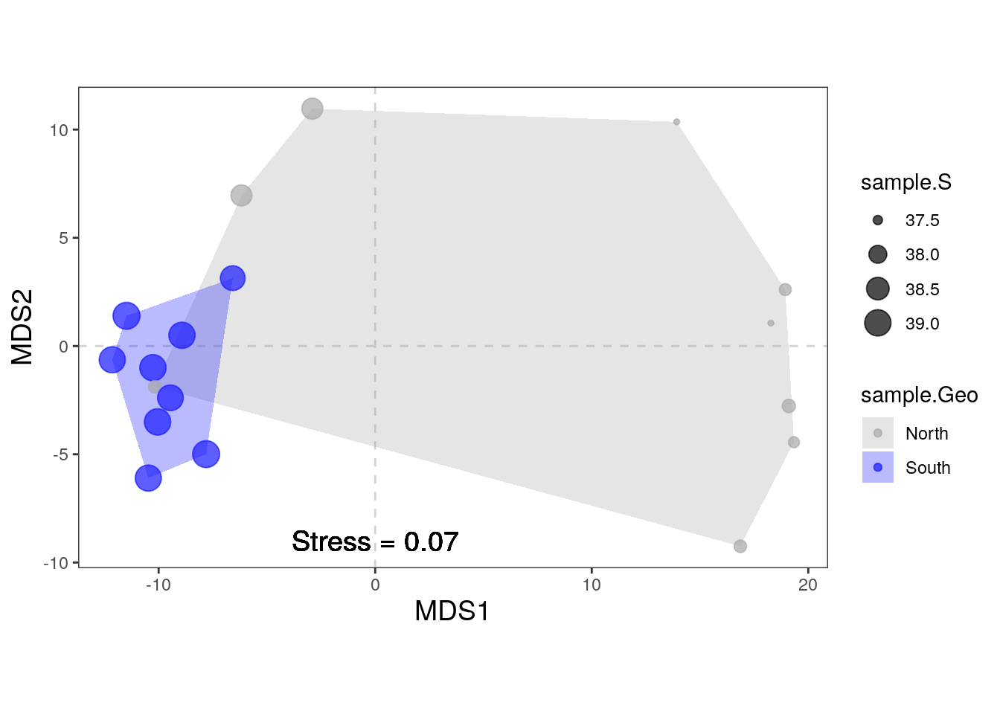
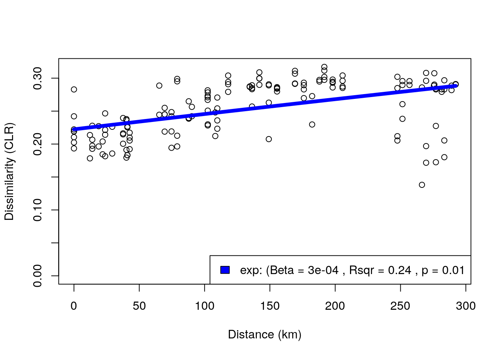

library(phyloseq)
library(ggplot2)
library(dplyr)
devtools::load_all()PARTIII_BETA_Diversity_ANF
1 Preparing the R session
1.1 Load some libraries
output_beta <- here::here("outputs", "beta_diversity")
if (!dir.exists(output_beta)) dir.create(output_beta, recursive = TRUE)1.2 Load the data in R
Load the data and inspect the phyloseq object
physeq <- readRDS(here::here("data",
"asv_table",
"phyloseq_object_alpha_beta_div.rds"))2 Preparation of the data
2.1 Normalisation
Here we will consider two approaches for library size normalization. The first will involve simply subsampling the data without replacement; however, this approach comes with limitations that are well described here.
The second will employ a compositional data analysis approach and involves working with log-ratios.
2.1.1 Rarefaction
We will subsample reads from each sample without replacement to a constant depth. Let see first how many reads we have per sample:
rowSums(physeq@otu_table@.Data)S11B S1B S2B S2S S3B S3S S4B S4S S5B S5S S6B S6S S7B S7S S8B S8S
975 837 893 983 878 889 917 1077 1018 1006 1076 937 878 936 846 958
S9B S9S
888 991 We will plot these results and look at the rank abudance of the reads
readsumsdf <- data.frame(nreads = sort(taxa_sums(physeq), decreasing = TRUE),
sorted = 1:ntaxa(physeq),
type = "OTUs")
tmp <- data.frame(nreads = sort(sample_sums(physeq), decreasing = TRUE),
sorted = 1:nsamples(physeq),
type = "Samples")
readsumsdf <- rbind(readsumsdf, tmp)
head(readsumsdf) nreads sorted type
ASV1 1558 1 OTUs
ASV2 973 2 OTUs
ASV3 899 3 OTUs
ASV4 833 4 OTUs
ASV5 767 5 OTUs
ASV6 654 6 OTUsggplot(readsumsdf, aes(x = sorted, y = nreads)) +
geom_bar(stat = "identity") +
ggtitle("Total number of reads") +
scale_y_log10() +
facet_wrap(~type, nrow = 1, scales = "free")We will now transform to equal sample sum (Only if the number of reads is not the same between samples) in order to be sure that the sampling effort is the same between samples.
# set the seed for random sampling
# it allows reproductibility
set.seed(10000)
# minimum reads in a sample
min(rowSums(physeq@otu_table@.Data))[1] 837The minimun number of reads in a sample is 837. Lets do the randomization at 800 reads per sample in order to apply the process also in the sample having this minimum of reads.
physeq_rar <- rarefy_even_depth(physeq, sample.size = 800)
rowSums(physeq_rar@otu_table@.Data) #how many reads per sampleS11B S1B S2B S2S S3B S3S S4B S4S S5B S5S S6B S6S S7B S7S S8B S8S
800 800 800 800 800 800 800 800 800 800 800 800 800 800 800 800
S9B S9S
800 800 physeqphyloseq-class experiment-level object
otu_table() OTU Table: [ 213 taxa and 18 samples ]
sample_data() Sample Data: [ 18 samples by 21 sample variables ]
tax_table() Taxonomy Table: [ 213 taxa by 7 taxonomic ranks ]
phy_tree() Phylogenetic Tree: [ 213 tips and 212 internal nodes ]
refseq() DNAStringSet: [ 213 reference sequences ]physeq_rarphyloseq-class experiment-level object
otu_table() OTU Table: [ 208 taxa and 18 samples ]
sample_data() Sample Data: [ 18 samples by 21 sample variables ]
tax_table() Taxonomy Table: [ 208 taxa by 7 taxonomic ranks ]
phy_tree() Phylogenetic Tree: [ 208 tips and 207 internal nodes ]
refseq() DNAStringSet: [ 208 reference sequences ]2.1.2 Centered log-ratio (CLR) transformation
A detailed discussion of compositional data analysis (CoDA) is beyond the scope of this session but just know that microbiome data is compositional since reads total is constrained by the sequencing depth. Relative abundances (proportions) are obviously constraint by a sum equal to one. This total constraint induces strong dependencies among the observed abundances of the different taxa. In fact, nor the absolute abundance (read counts) nor the relative abundance (proportion) of one taxon alone are informative of the real abundance of the taxon in the environment. Instead, they provide information on the relative measure of abundance when compared to the abundance of other taxa in the same sample. For this reason, these data fail to meet many of the assumptions of our favorite statistical methods developed for unconstrained random variables. Working with ratios of compositional elements lets us transform these data to the Euclidian space and apply our favorite methods. There are different types of log-ratio “transformations” including the additive log-ratio, centered log-ratio, and isometric log-ratio transforms. Find more information here, here and here
Let’s perform the CLR transformation
tmp
# we first replace the zeros using
# the Count Zero Multiplicative approach
tmp <- zCompositions::cmultRepl(physeq@otu_table,
method = "CZM",
label = 0)
# generate the centered log-ratio transformed. ASVs are in rows!!!!!
physeq_clr_asv <- apply(tmp, 1, function(x) log(x) - mean(log(x)))#create a new phyloseq object with CLR tranformed counts
physeq_clr <- physeq
otu_table(physeq_clr) <- otu_table(t(physeq_clr_asv),
taxa_are_rows = FALSE)
data.frame(physeq_clr@otu_table@.Data[1:5,1:10]) ASV1 ASV2 ASV3 ASV4 ASV5 ASV6 ASV7
S11B 3.893295 2.349996 3.573772 3.379616 3.597029 2.820000 3.174172
S1B 4.051237 -1.253233 2.982039 -1.253233 3.778370 3.717746 -1.253233
S2B 3.041890 -1.827389 2.836038 1.988740 3.018360 3.231934 -1.827389
S2S 3.705729 3.536908 3.401733 1.555907 3.666120 2.832200 2.654519
S3B 3.635430 -1.548237 3.023628 -1.548237 3.449713 3.848352 -1.548237
ASV8 ASV9 ASV10
S11B 2.657481 2.844693 -1.981602
S1B -1.253233 3.142381 3.906988
S2B -1.827389 -1.827389 3.041890
S2S 3.347666 2.899641 -2.042622
S3B -1.548237 -1.548237 3.600944We can see that the values are now no longer counts, but rather the dominance (or lack thereof) for each taxa relative to the geometric mean of all taxa on the logarithmic scale. This centered log-ratio (CLR) transformed table can be used directly in a PCA or RDA to generate a beta diveristy ordination using the Aitchison distance.
Tips: This chunk can be coded in one line using the microbiome package: physeq_clr <- microbiome::transform(physeq, “clr”)
3 Visualisation of the meta-community composition
Often an early step in many microbiome projects is to visualize the relative abundance of organisms at specific taxonomic ranks. Treemaps and stacked barplots are two ways of doing this.
physeq_phylum <- physeq_rar %>%
tax_glom(taxrank = "Family") %>% # agglomerate at the Family level
transform_sample_counts(function(x) {x/sum(x)} ) %>% # Transform to rel. abundance
psmelt() %>% # Melt to long format
filter(Abundance > 0.02) %>% # Filter out low abundance taxa
arrange(Family) # Sort data frame alphabetically by phylum
head(physeq_phylum) OTU Sample Abundance SampName Geo Description groupe Pres PicoEuk Synec
1 ASV7 S4S 0.2483311 S4S North North4S NBS 78 2220 3130
2 ASV7 S4B 0.2129784 S4B North North4B NBF 78 2220 3130
3 ASV7 S5S 0.1833085 S5S North North5S NBS 0 1620 56555
4 ASV7 S2B 0.1776119 S2B North North2B NBF 59 890 25480
5 ASV7 S3S 0.1745283 S3S North North3S NBS 0 715 26725
6 ASV7 S5B 0.1741214 S5B North North5B NBF 42 1620 55780
Prochloro NanoEuk Crypto SiOH4 NO2 NO3 NH4 PO4 NT PT Chla
1 29835 2120 235 2.457 0.099 1.087 0.349 0.137 8.689 3.129 0.0000
2 29835 2120 235 2.457 0.099 1.087 0.349 0.137 8.689 3.129 0.0000
3 22835 2560 945 2.669 0.136 0.785 0.267 0.114 9.146 3.062 0.0000
4 16595 670 395 2.592 0.105 1.125 0.328 0.067 9.378 3.391 0.0000
5 16860 890 200 1.656 0.098 0.794 0.367 0.095 7.847 2.520 0.0000
6 23795 2555 1355 2.028 0.103 1.135 0.216 0.128 8.623 3.137 0.0102
T S Sigma_t Kingdom Phylum Class
1 18.8515 37.4542 26.9415 Bacteria Proteobacteria Alphaproteobacteria
2 18.8515 37.4542 26.9415 Bacteria Proteobacteria Alphaproteobacteria
3 24.1789 38.3213 26.1065 Bacteria Proteobacteria Alphaproteobacteria
4 22.6824 37.6627 26.0521 Bacteria Proteobacteria Alphaproteobacteria
5 22.5610 37.5960 26.0332 Bacteria Proteobacteria Alphaproteobacteria
6 24.1905 38.3192 26.1037 Bacteria Proteobacteria Alphaproteobacteria
Order Family
1 Rhodospirillales AEGEAN-169 marine group
2 Rhodospirillales AEGEAN-169 marine group
3 Rhodospirillales AEGEAN-169 marine group
4 Rhodospirillales AEGEAN-169 marine group
5 Rhodospirillales AEGEAN-169 marine group
6 Rhodospirillales AEGEAN-169 marine group3.1 Treemaps
3.1.1 What for?
Looking at the composition of the meta community with a treemap allow roughly to detect if some taxa should not be present (contaminants) and observe if the dominanting taxa correspond to the habitat studied.
3.1.2 Using the package treemap
#pdf(file="treemap.pdf", wi = 7, he = 7)
treemap::treemap(physeq_phylum, index=c("Class", "Family"), vSize="Abundance", type="index",
fontsize.labels=c(15,12), # size of labels. Give the size per level of aggregation: size for group, size for subgroup, sub-subgroups...
fontcolor.labels=c("white","black"), # Color of labels
fontface.labels=c(2,1), # Font of labels: 1,2,3,4 for normal, bold, italic, bold-italic...
align.labels=list(
c("center", "center"),
c("left", "bottom")), # Where to place labels in the rectangle?
overlap.labels=0.5, # number between 0 and 1 that determines the tolerance of the overlap between labels. 0 means that labels of lower levels are not printed if higher level labels overlap, 1 means that labels are always printed. In-between values, for instance the default value .5, means that lower level labels are printed if other labels do not overlap with more than .5 times their area size.
inflate.labels=F, # If true, labels are bigger when rectangle is bigger.
border.col=c("black","white"), #Color of the boders separating the taxonomic levels
border.lwds=c(4,2),
#palette = "Set3", # Select your color palette from the RColorBrewer presets or make your own.
fontsize.title=12
)#dev.off()3.1.3 Using the package treemapify
tmp <- transform_sample_counts(physeq,function(x) {x/sum(x)} ) %>%
psmelt() %>%
group_by(Family, Class) %>%
summarise(abundance = sum(Abundance)) %>%
na.omit()
ggplot(tmp,aes(area=abundance,label=Family,fill=Class,subgroup=Class))+
treemapify::geom_treemap()+
treemapify::geom_treemap_subgroup_border() +
treemapify::geom_treemap_subgroup_text(place = "centre",
grow = T,
alpha = 0.5,
colour = "black",
fontface = "italic",
min.size = 0) +
treemapify::geom_treemap_text(colour = "white",
place = "topleft",
reflow = TRUE)+
theme(legend.position="none")ggsave(here::here(output_beta,"treemap_treemapify.pdf"))3.1.4 Observations
Here we can observe that the meta-community is dominated by typical marine clades such as the AEGEAN marine group in Alphaproteobacteria or the SAR86 clade in Gammaproteobacteria. So everything is good so far.
3.2 Stacked barplots
ggplot(physeq_phylum, aes(x = Sample, y = Abundance, fill = Family)) +
geom_bar(stat = "identity") +
# facet_wrap(~Treatment, nrow=1, scales = "free_x") +
ylab("Relative Abundance (Family > 2%)") +
scale_y_continuous(expand = c(0,0)) + #remove the space below the 0 of the y axis in the graph
ggtitle("Community composition") +
theme_bw() +
theme(axis.title.x = element_blank(),
axis.text.x = element_text(angle = 45, size = 10,
hjust = 0.5, vjust = 0.8),
axis.ticks.x = element_blank(),
panel.background = element_blank(),
panel.grid.major = element_blank(), #remove major-grid labels
panel.grid.minor = element_blank()) #remove minor-grid labelsggsave(here::here(output_beta, "asv_composition.pdf"))Here we can already see some differences in the composition at the Family level with an enrichment in Pseudoalteromonadaceae in some samples and Cyanobiaceae. Note that we are limited by our ability to discernate between than more than 9-12 colors in this kind of graphic.
4 Distance or dissimilarity matrices
4.1 Calculation
Over the years, ecologists have invented numerous ways of quantifying dissimilarity between pairs of ecosystems.Four components of species community beta-diveristy can be assessed using different distances or dissimilarities. Compostional distances or dissimilarities do not consider the relative abundance of taxa, only their presence (detection) or absence, which can make it (overly) sensitive to rare taxa, sequencing artefacts, and abundance filtering choices. Conversely, structural distances or dissimilarities do put (perhaps too much) more importance on highly abundant taxa, when determining dissimilarities. Phylogentic distances or dissimilarities take into account the phylogenetic relatedness of the taxa / sequences in your samples when calculating dissimilarity while taxnomic distances or dissimilarities do not.
4.1.1 Compositional taxonomic
physeq_rar_jaccard <- phyloseq::distance(physeq_rar,
method = "jaccard",
binary = TRUE)
# trick to avoid negative egein values in PCoA
# it recreates what ade4::dist.binary() does
physeq_rar_jaccard <- sqrt(physeq_rar_jaccard)4.1.2 Compositional phylogenetic (Unweighted unifrac)
The GUniFrac package requires a rooted tree as input data. We can use the function midpoint() from the phangorn package to obtain the rooted tree.
To check if your tree is rooted, you may use this function:
ape::is.rooted(physeq_rar@phy_tree)[1] TRUEIf not, you can use the function midpoint() from the package phangorn
phy_tree(physeq_rar) <- phangorn::midpoint(physeq_rar@phy_tree)Now, Unifrac distances can be calculated
unifracs <- GUniFrac::GUniFrac(physeq_rar@otu_table@.Data, physeq_rar@phy_tree, alpha=c(0, 0.5, 1))$unifracsThe unifracs object is a list containing 5 distance matrices correspoonding to the weighted UniFrac (d_1), the unweighted UniFrac (d_UW), Variance adjusted UniFrac (d_VAW), GUniFrac with alpha = 0, GUniFrac with alpha = 0.5
physeq_rar_du <- unifracs[, , "d_UW"] # Unweighted UniFrac4.1.3 Structural taxonomic (Bray-Curtis)
# physeq_rar_bray <- vegan::vegdist(physeq_rar@otu_table@.Data, method = "bray")
tmp <- transform_sample_counts(physeq,function(x) {x/sum(x)} )
physeq_rar_bray <- phyloseq::distance(tmp, method = "bray")4.1.4 Structural phylogenetic (Weighted UniFrac)
physeq_rar_dw <- unifracs[, , "d_1"] # Weighted UniFrac4.2 Visualisation
You can actually calculate all these distances directly in phyloseq using dist.calc(). There are currently 44 explicitly supported method options in the phyloseq package, see here for more informations. Here, we will loop through each distance method, save each plot to a list and then plot these results in a combined graphic using ggplot2.
dist_methods <- unlist(distanceMethodList)
data.frame(position = seq_along(dist_methods),
dist_methods) position dist_methods
UniFrac1 1 unifrac
UniFrac2 2 wunifrac
DPCoA 3 dpcoa
JSD 4 jsd
vegdist1 5 manhattan
vegdist2 6 euclidean
vegdist3 7 canberra
vegdist4 8 bray
vegdist5 9 kulczynski
vegdist6 10 jaccard
vegdist7 11 gower
vegdist8 12 altGower
vegdist9 13 morisita
vegdist10 14 horn
vegdist11 15 mountford
vegdist12 16 raup
vegdist13 17 binomial
vegdist14 18 chao
vegdist15 19 cao
betadiver1 20 w
betadiver2 21 -1
betadiver3 22 c
betadiver4 23 wb
betadiver5 24 r
betadiver6 25 I
betadiver7 26 e
betadiver8 27 t
betadiver9 28 me
betadiver10 29 j
betadiver11 30 sor
betadiver12 31 m
betadiver13 32 -2
betadiver14 33 co
betadiver15 34 cc
betadiver16 35 g
betadiver17 36 -3
betadiver18 37 l
betadiver19 38 19
betadiver20 39 hk
betadiver21 40 rlb
betadiver22 41 sim
betadiver23 42 gl
betadiver24 43 z
dist1 44 maximum
dist2 45 binary
dist3 46 minkowski
designdist 47 ANY#Select the distances of interest
dist_methods <- dist_methods[c(1, 2, 10, 8)]
dist_methods UniFrac1 UniFrac2 vegdist6 vegdist4
"unifrac" "wunifrac" "jaccard" "bray" #Loop through each distance method, save each plot to a list, called plist.
plist <- vector("list")
for(i in dist_methods){
# Calculate distance matrix
iDist <- phyloseq::distance(physeq_rar, method = i)
# Calculate PCoA ordination
iMDS <- ordinate(physeq_rar, "MDS", distance = iDist)
## Make plot. Don't carry over previous plot (if error, p will be blank)
p <- NULL
# Create plot, store as temp variable, p
p <- plot_ordination(physeq_rar, iMDS, color= "Geo")
# Add title to each plot
p <- p + ggtitle(paste("MDS using distance method ", i, sep=""))
# Save the graphic to list
plist[[i]] = p
}Combine results
df <- plyr::ldply(plist, function(x) x$data)
head(df) .id Axis.1 Axis.2 SampName Geo Description groupe Pres
1 unifrac 0.09023445 0.06150644 S11B South South5B SGF 35
2 unifrac -0.21048836 -0.19946687 S1B North North1B NBF 52
3 unifrac -0.21001002 -0.08655455 S2B North North2B NBF 59
4 unifrac 0.12583068 0.07022248 S2S North North2S NBS 0
5 unifrac -0.31465014 -0.06077941 S3B North North3B NBF 74
6 unifrac -0.16616937 0.01827175 S3S North North3S NBS 0
PicoEuk Synec Prochloro NanoEuk Crypto SiOH4 NO2 NO3 NH4 PO4 NT
1 5370 46830 580 6010 1690 3.324 0.083 0.756 0.467 0.115 9.539
2 660 32195 10675 955 115 1.813 0.256 0.889 0.324 0.132 9.946
3 890 25480 16595 670 395 2.592 0.105 1.125 0.328 0.067 9.378
4 890 25480 16595 670 395 3.381 0.231 0.706 0.450 0.109 8.817
5 835 13340 25115 1115 165 1.438 0.057 1.159 0.369 0.174 8.989
6 715 26725 16860 890 200 1.656 0.098 0.794 0.367 0.095 7.847
PT Chla T S Sigma_t
1 4.138 0.0182 23.0308 38.9967 26.9631
2 3.565 0.0000 22.7338 37.6204 26.0046
3 3.391 0.0000 22.6824 37.6627 26.0521
4 3.345 0.0000 22.6854 37.6176 26.0137
5 2.568 0.0000 21.5296 37.5549 26.2987
6 2.520 0.0000 22.5610 37.5960 26.0332names(df)[1] <- "distance"
ggplot(df, aes(Axis.1, Axis.2, color = Geo)) +
geom_point(size=3, alpha=0.5) +
theme_bw() +
facet_wrap(~distance, scales="free") +
ggtitle("PCoA (MDS) on various distance metrics")We can observe that there is a fairly good separation between North and South samples except for the Weighted UniFrac distance which tends to give too much weight to the most abundant ASVs that are also the most frequent.
5 Hierarchical clustering
5.1 Hierarchical ascendant classification (HAC)
A first step in many microbiome projects is to examine how samples cluster on some measure of (dis)similarity. There are many ways to do perform such clustering, see here. Since microbiome data is compositional, we will perform here a hierarchical ascendant classification (HAC) of samples based on Aitchison distance.
#distance matrix calculation
physeq_clr_dist <- phyloseq::distance(physeq_clr, method = "euclidean")Let’s see the different clustering obtained with the four aggregation criterion
#Simple aggregation criterion
spe_single <- hclust(physeq_clr_dist, method = "single")
#Complete aggregation criterion
spe_complete <- hclust(physeq_clr_dist, method = "complete")
#Unweighted pair group method with arithmetic mean
spe_upgma <- hclust(physeq_clr_dist, method = "average")
#Ward criterion
spe_ward <- hclust(physeq_clr_dist, method = "ward.D")
par(mfrow = c(2, 2))
plot(spe_single, main = "single")
plot(spe_complete, main = "complete")
plot(spe_upgma, main = "UPGMA")
plot(spe_ward, main = "ward")
Remember that clustering is a heuristic procedure, not a statistical test. The choices of an association coefficient and a clustering method influence the result. This stresses the importance of choosing a method that is consistent with the aims of the analysis.
5.2 Cophenetic Correlation
A cophenetic matrix is a matrix representing the cophenetic distances among all pairs of objects. A Pearson’s r correlation, called the cophenetic correlation in this context, can be computed between the original dissimilarity matrix and the cophenetic matrix. The method with the highest cophenetic correlation may be seen as the one that produced the best clustering model for the distance matrix.
Let us compute the cophenetic matrix and correlation of four clustering results presented above, by means of the function cophenetic() of package stats.
#Cophenetic corrélation
spe_single_coph <- cophenetic(spe_single)
cor(physeq_clr_dist, spe_single_coph)
spe_complete_coph <- cophenetic(spe_complete)
cor(physeq_clr_dist, spe_complete_coph)
spe_upgma_coph <- cophenetic(spe_upgma)
cor(physeq_clr_dist, spe_upgma_coph)
spe_ward_coph <- cophenetic(spe_ward)
cor(physeq_clr_dist, spe_ward_coph)Which dendrogram retains the closest relationship to the Aitchinson distance matrix?
To illustrate the relationship between a distance matrix and a set of cophenetic matrices obtained from various methods, one can draw Shepard-like diagrams (Legendre and Legendre 1998, p. 377) by plotting the original distances against the cophenetic distances.
plot_coph_cor <- function(cophenetic_distance, hclust_type){
# first calculate the correlation between
# the cophenetic distance and the observed distance
cor_res <- round(cor(physeq_clr_dist, cophenetic_distance),3)
# generate a scatter plot to visualise
# the relationship
plot(x = physeq_clr_dist,
y = cophenetic_distance,
xlab = "Aitchison distance",
ylab = "Cophenetic distance",
xlim = c(10, 35), ylim = c(10, 35),
main = c(hclust_type, paste("Cophenetic correlation ", cor_res)))
abline(0, 1)
}
par(mfrow=c(2,2))
plot_coph_cor(cophenetic_distance = spe_complete_coph,
hclust_type = "Single linkage")
plot_coph_cor(cophenetic_distance = spe_complete_coph,
hclust_type = "Complete linkage")
plot_coph_cor(cophenetic_distance = spe_upgma_coph,
hclust_type = "Average linkage")
plot_coph_cor(cophenetic_distance = spe_ward_coph,
hclust_type = "Ward linkage")
It seems clear that the UPGMA method give the most faithful representation of original distances.
5.3 Looking for Interpretable Clusters
To interpret and compare clustering results, users generally look for interpretable clusters. This means that a decision must be made: at what level should the dendrogram be cut? Many indices (more than 30) has been published in the literature for finding the right number of clusters in a dataset. The process has been covered here. The fusion level values of a dendrogram are the dissimilarity values where a fusion between two branches of a dendrogram occurs. Plotting the fusion level values may help define cutting levels. Let us plot the fusion level values for for the UPGMA dendrogram.
#Fusion level plot
par(mfrow = c(1, 1))
plot(x = spe_upgma$height,
y = phyloseq::nsamples(physeq_clr):2,
type = "S",
main = "Fusion levels - Aitchison - Average",
ylab = "k (number of cluster)",
xlab = "h (node height)")
text(x = spe_upgma$height,
y = phyloseq::nsamples(physeq_clr):2,
labels = phyloseq::nsamples(physeq_clr):2,
col = "red",
cex = 0.8)
From right to left, this first graph shows clear jumps after each fusion between 2 groups. We’ll use the package NbClust which will compute, with a single function call, 24 indices for confirming the right number of clusters in the dataset:
install.packages("NbClust", lib = ".")
library("NbClust", lib.loc = ".")
nclust <- nb_clust_all(data = t(physeq_clr_asv), seed = 1000)[1] "Trying kl index..."
[1] "Trying ch index..."
[1] "Trying hartigan index..."
[1] "Trying scott index..."
[1] "Trying cindex index..."
[1] "Trying db index..."
[1] "Trying silhouette index..."
[1] "Trying duda index..."
[1] "Trying pseudot2 index..."
[1] "Trying beale index..."Warning in pf(beale, pp, df2): Production de NaN[1] "Trying ratkowsky index..."
[1] "Trying ball index..."
[1] "Trying ptbiserial index..."
[1] "Trying gap index..."
[1] "Trying frey index..."
[1] "Trying mcclain index..."
[1] "Trying gamma index..."
[1] "Trying gplus index..."
[1] "Trying tau index..."
[1] "Trying dunn index..."
[1] "Trying hubert index..."*** : The Hubert index is a graphical method of determining the number of clusters.
In the plot of Hubert index, we seek a significant knee that corresponds to a
significant increase of the value of the measure i.e the significant peak in Hubert
index second differences plot.
[1] "Trying sdindex index..."
[1] "Trying dindex index..."*** : The D index is a graphical method of determining the number of clusters.
In the plot of D index, we seek a significant knee (the significant peak in Dindex
second differences plot) that corresponds to a significant increase of the value of
the measure.
[1] "Trying sdbw index..."
Based on a number of criteria, we will select 3 clusters.NbClust confirm the identification of two clusters of samples. We will go back to the dendrogram and cut it at the corresponding distances.
#Cut the dendrogram in order to obtain K groups and compare their compositionC
k <- 2 # Number of groups given by the fusion level plot
#Cut the dendrogram
spe_upgma_clust <- cutree(tree = spe_upgma, k = k)
table(spe_upgma_clust)spe_upgma_clust
1 2
12 6 spe_upgma_clust2 <- data.frame(UPGMA_clusters = spe_upgma_clust)# Plot dendrogram with group labels
plot(spe_upgma,
hang = -1,
ylab = "Height",
main="Aitchison distance - UPGMA")
rect.hclust(spe_upgma,
k = k,
border = 2:6,
cluster = spe_upgma_clust)
legend("topright",
paste("Cluster", 1:k),
pch = 22,
col = 2:(k + 1),
bty = "n")Do the groups obtained make sense? Do you obtain enough groups containing a substantial number of sites?
There are several ways to measure the robustness of a clustering algorithm. Three commonly used metrics are the Dunn index, Davis-Bouldin index and Silhoutte index. The Dunn index is calculated as a ratio of the smallest inter-cluster distance to the largest intra-cluster distance. A high DI means better clustering since observations in each cluster are closer together, while clusters themselves are further away from each other. We’ll use the function cluster.stats() in fpc package for computing the Dunn index which can be used for cluster validation,
cs <- fpc::cluster.stats(d = physeq_clr_dist,
clustering = spe_upgma_clust)
cs$dunn[1] 0.8369982The Dunn index is high indicating a good clustering of samples. Now that we identified two groups of samples based on their microbial community composition, we may want to look at which microbial clades or ASVs are enriched in each of the groups.
5.4 Combining clustering and Z-score Heatmap
Z-score heatmap are normalized (centered around the mean (by line!!) & reduced (Standard deviation= SD). It’s the comparison on an observed value of a sample to the mean of the population. So, it answers to the question, how far from the population mean is a score for a given sample. The scores are given in SD to the population mean.
5.4.1 Select the top 30 ASV
Here we used ASV but of course you can do it on Family or genus taxonomic level!
#Transform Row/normalized counts in percentage: transform_sample_counts
pourcentS <- phyloseq::transform_sample_counts(physeq_rar, function(x) x/sum(x) * 100)
#Selection of top 30 taxa
mytop30 <- names(sort(phyloseq::taxa_sums(pourcentS), TRUE)[1:30])
#Extraction of taxa from the object pourcentS
selection30 <- phyloseq::prune_taxa(mytop30, pourcentS)
#See new object with only the top 30 ASV
selection305.4.2 Get the otu_table & Z-score transformation
#Retrieve abundance of ASV (otu_table) as table & put in data.prop variable
selection30_asv <- phyloseq::otu_table(selection30)
selection30_sample <- phyloseq::sample_data(selection30)
#Change the rownames
#See
rownames(selection30_asv) [1] "S11B" "S1B" "S2B" "S2S" "S3B" "S3S" "S4B" "S4S" "S5B" "S5S"
[11] "S6B" "S6S" "S7B" "S7S" "S8B" "S8S" "S9B" "S9S" #Change... Why?
# rownames(data.prop)<-c("S11B_South5B","S1B_North1B","S2B_North2B","S2S_North2S","S3B_North3B","S3S_North3S","S4B_North4B","S4S_North4S","S5B_North5B","S5S_North5S","S6B_South1B","S6S_South1S","S7B_South2B","S7S_South2S","S8B_South3B","S8S_South3S","S9B_South4B","S9S_South4S")
sample_new_names <- paste(selection30_sample$SampName,
selection30_sample$Description,
sep = "_")
#Z-score transformation (with scale)
heat <- t(base::scale(selection30_asv))
#See
head(data.frame(heat)) S11B S1B S2B S2S S3B S3S
ASV1 1.0670101 -0.36085474 -0.8368097 0.5070631 -0.6688256 0.08710287
ASV2 -0.3822681 -0.72549212 -0.7254921 0.5166521 -0.7254921 -0.59474010
ASV3 1.4657223 -1.12279860 -0.5254476 0.6692543 -0.3761099 -2.16816282
ASV4 0.2776466 -1.18129127 -0.9019202 -0.8087965 -1.1812913 -0.77775527
ASV5 1.1642633 0.31674810 0.2397013 1.3954038 0.3552715 0.20117785
ASV6 0.4514863 -0.01289961 0.7417276 0.3934381 1.4963548 -1.81239520
S4B S4S S5B S5S S6B S6S
ASV1 -1.7327249 -0.3608547 1.48697039 2.2149015 1.48697039 -0.47284414
ASV2 -0.6110841 -0.6764601 -0.49667608 -0.7254921 0.38590007 3.34416457
ASV3 -0.6747854 -0.7245646 1.06748833 -1.0232401 -0.02765514 0.02212411
ASV4 -0.3121368 -1.1812913 1.67450193 1.1778422 -0.68463158 -0.56046666
ASV5 -0.3766734 0.5864120 -1.30123544 0.2782247 1.43392721 -1.30123544
ASV6 0.7997758 -1.8123952 0.04514863 -1.8123952 -0.59338206 -0.59338206
S7B S7S S8B S8S S9B S9S
ASV1 -0.8928044 0.03110817 -0.6128309 -0.3888521 -0.5568362 0.003110817
ASV2 0.9742842 -0.18614003 0.4349321 -0.5293641 0.4022441 0.320524054
ASV3 0.6194751 -0.22677213 0.5696958 1.8639563 -0.1769929 0.768812836
ASV4 0.8363887 1.02263609 1.2088835 1.1778422 0.8053475 -0.591507891
ASV5 -1.3012354 -1.30123544 -1.3012354 0.3552715 1.2798335 -0.723384173
ASV6 -0.1870443 0.10319688 0.7417276 0.2192934 0.5095346 1.3222100225.4.3 Heat map Z-score
ComplexHeatmap::Heatmap(
heat,
row_names_gp = grid::gpar(fontsize = 6),
cluster_columns = FALSE,
heatmap_legend_param = list(direction = "vertical",
title = "Z-scores",
grid_width = unit(0.5, "cm"),
legend_height = unit(3, "cm"))
)5.4.4 Add the Taxonomy for ASV names
#get taxnomic table
taxon <- phyloseq::tax_table(selection30) |>
as.data.frame()
#concatene ASV with Phylum & Family names
myname <- paste(rownames(taxon), taxon$Phylum, taxon$Family, sep="_")
#apply
colnames(selection30_asv) <- myname5.4.5 Apply to the Heatmap
#re-run Z-score to take into account the colnames change
heat <- t(scale(selection30_asv))
my_top_annotation <- ComplexHeatmap::anno_block(gp = grid::gpar(fill =c(3,4)),
labels = c(1, 2),
labels_gp = grid::gpar(col = "white",
fontsize = 10))
ComplexHeatmap::Heatmap(
heat,
row_names_gp = grid::gpar(fontsize = 6),
cluster_columns =TRUE,
heatmap_legend_param = list(direction = "vertical",
title ="Z-scores",
grid_width = unit(0.5, "cm"),
legend_height = unit(4, "cm")),
top_annotation = ComplexHeatmap::HeatmapAnnotation(foo = my_top_annotation),
column_km = 2,
column_names_gp= grid::gpar(fontsize = 6)
)5.4.6 Add a boxplot of ASV Abundance distribution within sample
boxplot <- ComplexHeatmap::anno_boxplot(t(selection30_asv),
which = "row",
gp = grid::gpar(fill = "turquoise3"))
my_boxplot_left_anno <- ComplexHeatmap::HeatmapAnnotation(Abund = boxplot,
which = "row",
width = unit(3, "cm"))
my_top_anno <- ComplexHeatmap::anno_block(gp = grid::gpar(fill = c(3, 6)),
labels = c("South", "North"),
labels_gp = grid::gpar(col = "white",
fontsize = 10))
my_top_anno <- ComplexHeatmap::HeatmapAnnotation(foo = my_top_anno)
ComplexHeatmap::Heatmap(
heat,
row_names_gp = grid::gpar(fontsize = 7),
left_annotation = my_boxplot_left_anno,
heatmap_legend_param = list(direction = "vertical",
title ="Z-scores",
grid_width = unit(0.5, "cm"),
legend_height = unit(3, "cm")),
top_annotation = my_top_anno,
column_km = 2,
cluster_columns = TRUE,
column_dend_side = "bottom",
column_names_gp = grid::gpar(fontsize = 7)
)
We can now observe that microbial communities in samples from the south differ in their microbial composition from sample from the north. The significant effect of treatment (North/south) remains to be tested statistically, we’ll see how it is done in the hypothese testing section. This difference in community composition is due to the apparent differential abundance of many top ASV of the dataset. The identification of significant biomarkers in North and South samples will be covered in the differential abundance testing section.
6 Indirect gradient analysis
While cluster analysis looks for discontinuities in a dataset, ordination extracts the main trends in the form of continuous axes. It is therefore particularly well adapted to analyse data from natural ecological communities, which are generally structured in gradients. That is why these type of analysis are called gradient analysis. The aim of ordination methods is to represent the data along a reduced number of orthogonal axes, constructed in such a way that they represent, in decreasing order, the main trends of the data. We’ll see four types of analysis widely used in ecology: PCA, PCoA, NMDS. All these methods are descriptive: no statistical test is provided to assess the significance of the structures detected. That is the role of constrained ordination or hypothese testing analysis that are presented in the following chapters.
6.1 Principal component analysis (PCA)
Principal components analysis (PCA) is a method to summarise, in a low-dimensional space, the variance in a multivariate scatter of points. In doing so, it provides an overview of linear relationships between your objects and variables. This can often act as a good starting point in multivariate data analysis by allowing you to note trends, groupings, key variables, and potential outliers. Again, because of the compositional nature of microbiome data, we will use the Aitchinson distance here. Be aware that this is the CLR transformed ASV table which is used directly not the Aitchinson distance matrix. The function will calculate a euclidean distance on this CLR transformed table to get the Aitchison matrix. There are many packages allowing PCA analysis. We will use the recent PCAtools package wich provides functions for data exploration via PCA, and allows the user to generate publication-ready figures.
6.1.1 Number of PCs to retain
First, we will use a scree plot to examine the proportion of total variation explained by each PC.
#prepare the ASV table to add taxonomy
tax_CLR <- as.data.frame(tax_table(physeq_clr)) #get taxnomic table
#concatene ASV with Family & Genus names
ASVname <- paste(rownames(tax_CLR), tax_CLR$Family, tax_CLR$Genus,sep="_")
#apply
rownames(physeq_clr_asv) <- ASVname
p <- PCAtools::pca(physeq_clr_asv,
metadata = data.frame(sample_data(physeq_clr)))
PCAtools::screeplot(p, axisLabSize = 18, titleLabSize = 22)#variance explained by each PC
p$variance PC1 PC2 PC3 PC4 PC5 PC6
4.426841e+01 1.107721e+01 7.288920e+00 5.906096e+00 5.371601e+00 4.700098e+00
PC7 PC8 PC9 PC10 PC11 PC12
3.653510e+00 3.487138e+00 2.890673e+00 2.445228e+00 2.020781e+00 1.681659e+00
PC13 PC14 PC15 PC16 PC17 PC18
1.525155e+00 1.333803e+00 1.026759e+00 7.296512e-01 5.933018e-01 5.408574e-31 Here we see that the first PC really stands out with 31% of the variance explained and then we have a gradual decline for the remaining components. A scree plot on its own just shows the accumulative proportion of explained variation, but we want to determine the optimum number of PCs to retain.
#Horn’s parallel analysis (Horn 1965) (Buja and Eyuboglu 1992)
horn <- PCAtools::parallelPCA(physeq_clr_asv)
horn$n[1] 1#elbow method
elbow <- PCAtools::findElbowPoint(p$variance)
elbowPC3
3 The two methods indicate that we should retain the first 2 or 3 PCs. The reason for this discrepancy is because finding the correct number of PCs is a difficult task and is akin to finding the ‘correct’ number of clusters in a dataset - there is no correct answer. Most studies take into account only the two first PCs.
6.1.2 Plotting the ordination
#Plotting the PCA
PCAtools::biplot(
p,
lab = p$metadata$SampName,
colby = "Geo",
pointSize = 5,
hline = 0, vline = 0,
legendPosition = "right"
)
Each point is a sample, and samples that appear closer together are typically more similar to each other than samples which are further apart. So by colouring the points by treatment you can see that the microbiota from the North are often, but not always, highly distinct from sample from the south.
6.1.3 Determine the variables that drive variation among each PC
One benefit of not using a distance matrix, is that you can plot taxa “loadings” onto your PCA axes, using the showLoadings = TRUE argument. PCAtools allow you to plots the number of taxa loading vectors you want beginning by those having the more weight on each PCs. The relative length of each loading vector indicates its contribution to each PCA axis shown, and allows you to roughly estimate which samples will contain more of that taxon.
PCAtools::biplot(
p,
# loadings parameters
showLoadings = TRUE,
lengthLoadingsArrowsFactor = 1.5,
sizeLoadingsNames = 3,
colLoadingsNames = 'red4',
ntopLoadings = 3,
# other parameters
lab = p$metadata$X.SampleID,
colby = "Geo",
hline = 0, vline = 0,
legendPosition = "right"
)ASVs 7, 11 and 12 have a high contribution to PC1 while ASVs 38, 40, and 47 have a high contribution on the second PC. These ASVs belong to only two families. Samples from the South seems to be enriched in ASV7 while North samples contain higher abundances of ASV11 and 12. The two Noth sample outliers at the top of the plot are caracterized by a higher abundance of ASVs 38, 40, and 47.
6.1.4 Correlate the principal components back to environmental data
Further exploration of the PCs can come through correlations with environmental data. Here, we will correlate the two first PCs with environmental data.
PCAtools::eigencorplot(
p,
components = PCAtools::getComponents(p, 1:horn$n),
metavars = c('SiOH4','NO2','NO3','NH4','PO4',
'NT','PT','Chla',"T", "S", "Sigma_t"),
col = c('white', 'cornsilk1', 'gold',
'forestgreen', 'darkgreen'),
cexCorval = 1.2,
fontCorval = 2,
posLab = "all",
rotLabX = 45,
scale = TRUE,
main = bquote(PC ~ Spearman ~ r^2 ~ environmental ~ correlates),
plotRsquared = TRUE,
corFUN = "spearman",
corUSE = "pairwise.complete.obs",
corMultipleTestCorrection = 'BH',
signifSymbols = c("****", "***", "**", "*", ""),
signifCutpoints = c(0, 0.0001, 0.001, 0.01, 0.05, 1)
)
The only signficant correlation found is between the first PC1 explaining the separation between South and North samples and salinity. This is unteresting but correlation between variables does not automatically means that the change in one variable is the cause of the change in the values of the other variable. We’ll check later if there is a causal relationship between the salinity gradient and the difference observed in southern and northern bacterial communities.
6.2 Principal component analysis (PCoA)
Principal coordinates analysis (PCoA, also known as metric multidimensional scaling, MDS) attempts to represent the distances between samples in a low-dimensional, Euclidean space. In particular, it maximizes the linear correlation between the distances in the distance matrix, and the distances in a space of low dimension (typically, 2 or 3 axes are selected). As always, the choice of (dis)similarity measure is critical and must be suitable to the data in question. Here we will use the Bray-Curtis distance. When the distance metric is Euclidean, PCoA is equivalent to Principal Components Analysis. The interpretation of the results is the same as with PCA.
#BPCoA on Bray-Curtis dissimilarity
pcoa_asv <- ape::pcoa(physeq_rar_bray)
pcoa_coord <- pcoa_asv$vectors[, 1:2]
#Data frame for hull
hull <- data.frame("Axis.1" = pcoa_coord[, 1],
"Axis.2" = pcoa_coord[, 2],
"sample" = as.data.frame(sample_data(physeq_rar@sam_data)))
# North <- hull[hull$sample.Geo == "North", ][chull(hull[hull$sample.Geo == "North", c("Axis.1", "Axis.2")]), ] # hull values for North
# South <- hull[hull$sample.Geo == "South", ][chull(hull[hull$sample.Geo ==
# "South", c("Axis.1", "Axis.2")]), ] # hull values for Jellyfishes
# hull_data <- rbind(North, South)
#Vector of color for hulls
# color <- rep("#a65628", length(hull_data$sample.Geo))
# color[hull_data$sample.Geo == "North"] <- "#1919ff"
# hull_data <- cbind(hull_data, color)
hull_col <- c("#a65628","#1919ff")
names(hull_col) <- c("North","South")
hull_data <- hull %>%
dplyr::group_by(sample.Geo) %>%
dplyr::slice(chull(Axis.1,Axis.2)) %>%
dplyr::mutate(color = hull_col[sample.Geo])
head(hull_data)# A tibble: 6 × 24
# Groups: sample.Geo [1]
Axis.1 Axis.2 sample.SampName sample.Geo sample.Description sample.groupe
<dbl> <dbl> <chr> <chr> <chr> <chr>
1 0.242 -0.0992 S2S North North2S NBS
2 -0.403 -0.130 S2B North North2B NBF
3 -0.455 -0.0922 S3B North North3B NBF
4 -0.471 0.0176 S3S North North3S NBS
5 0.00454 0.407 S5S North North5S NBS
6 0.102 0.327 S5B North North5B NBF
# ℹ 18 more variables: sample.Pres <int>, sample.PicoEuk <int>,
# sample.Synec <int>, sample.Prochloro <int>, sample.NanoEuk <int>,
# sample.Crypto <int>, sample.SiOH4 <dbl>, sample.NO2 <dbl>,
# sample.NO3 <dbl>, sample.NH4 <dbl>, sample.PO4 <dbl>, sample.NT <dbl>,
# sample.PT <dbl>, sample.Chla <dbl>, sample.T <dbl>, sample.S <dbl>,
# sample.Sigma_t <dbl>, color <chr>Now that we prepared the data, lets plot the PCoA.
ggplot(data = hull, aes(x = Axis.1, y = Axis.2)) +
geom_hline(yintercept = 0, colour = "lightgrey", linetype = 2) +
geom_vline(xintercept = 0, colour = "lightgrey", linetype = 2) +
geom_polygon(data = hull_data,
aes(group = sample.Geo,
fill = sample.Geo),
alpha = 0.3) + # add the convex hulls)
scale_fill_manual(values = c("Darkgrey", "#1919ff")) +
geom_point(data = hull,
aes(color = sample.Geo,
size = sample.S),
alpha = 0.7) +
scale_color_manual(values = c("Darkgrey", "#1919ff")) +
xlab(paste("PCo1 (", round(pcoa_asv$values$Relative_eig[1]*100, 1), "%)")) +
ylab(paste("PCo2 (", round(pcoa_asv$values$Relative_eig[2]*100, 1), "%)")) +
theme_bw() +
coord_equal() +
theme(axis.title.x = element_text(size = 14), # remove x-axis labels
axis.title.y = element_text(size = 14), # remove y-axis labels
panel.background = element_blank(),
panel.grid.major = element_blank(), #remove major-grid labels
panel.grid.minor = element_blank(), #remove minor-grid labels
plot.background = element_blank())
The ordination of the samples in the PCoA is very similar to the one observed in the PCA with a clear segregation of North and South bacterial communities. This segregation may result from the increasing salinity gradient from North to South but it relaims to be tested.
Do you see what is missing?
Indeed, there are no species plotted on this ordination. That’s because we used a dissimilarity matrix (sites x sites) as input for the PCoA function. Hence, no species scores could be calculated. However, we could work around this problem with the function biplot.pcoa() from the ape package.
PCoA suffers from a number of flaws, in particular the arch effect (see PCA for more information). These flaws stem, in part, from the fact that PCoA maximizes a linear correlation. Non-metric Multidimensional Scaling (NMDS) rectifies this by maximizing the rank order correlation.
6.3 Non Metric Multidimensional Scaling (NMDS)
NMDS attempts to represent the pairwise dissimilarity between objects in a low-dimensional space. Any dissimilarity coefficient or distance measure may be used to build the distance matrix used as input. NMDS is a rank-based approach. This means that the original distance data is substituted with ranks. While information about the magnitude of distances is lost, rank-based methods are generally more robust to data which do not have an identifiable distribution.
NMDS is an iterative algorithm. NMDS routines often begin by random placement of data objects in ordination space. The algorithm then begins to refine this placement by an iterative process, attempting to find an ordination in which ordinated object distances closely match the order of object dissimilarities in the original distance matrix. The stress value reflects how well the ordination summarizes the observed distances among the samples.
NMDS is not an eigenanalysis. This has three important consequences:
- There is no unique ordination result
- The axes of the ordination are not ordered according to the variance they explain
- The number of dimensions of the low-dimensional space must be specified before running the analysis
Axes are not ordered in NMDS. vegan::metaMDS() automatically rotates the final result of the NMDS using PCA to make axis 1 correspond to the greatest variance among the NMDS sample points.
#NMDS plot on Aitchison distance
physeq_clr_nmds <- vegan::metaMDS(physeq_clr_dist, k=2, trymax=100) #Aitchison distanceA useful way to assess the appropriateness of an NMDS result is to compare, in a Shepard diagram, the distances among objects in the ordination plot with the original distances.
vegan::stressplot(physeq_clr_nmds)There is a good non-metric fit between observed dissimilarities (in our distance matrix) and the distances in ordination space. Also the stress of our final result was good.
do you know how much the stress is?
The stress value can be used as an indicator of the goodness-of-fit. Stress values >0.2 are generally poor and potentially not interpretable, whereas values <0.1 are good and <0.05 are excellent, leaving little danger of misinterpretation.
So we can go further and plot the results:
nmds_coord <- data.frame(physeq_clr_nmds$points)
#Data frame for hull
hull <- data.frame("Axis.1" = nmds_coord[,1],
"Axis.2" = nmds_coord[,2],
"sample" = as.data.frame(sample_data(physeq_clr@sam_data)))
# North <- hull[hull$sample.Geo == "North", ][chull(hull[hull$sample.Geo ==
# "North", c("Axis.1", "Axis.2")]), ] # hull values for North
# South <- hull[hull$sample.Geo == "South", ][chull(hull[hull$sample.Geo ==
# "South", c("Axis.1", "Axis.2")]), ] # hull values for Jellyfishes
# hull_data <- rbind(North, South)
# #Vector of color for hulls
# color <- rep("#a65628", length(hull_data$sample.Geo))
# color[hull_data$sample.Geo == "North"] <- "#1919ff"
# hull_data <- cbind(hull_data, color)
hull_col <- c("#a65628","#1919ff")
names(hull_col) <- c("North","South")
hull_data <- hull %>%
dplyr::group_by(sample.Geo) %>%
dplyr::slice(chull(Axis.1,Axis.2)) %>%
dplyr::mutate(color = hull_col[sample.Geo])
#pdf(file="NMDS_Aitchison.pdf", wi = 7, he = 7)
ggplot(hull,aes(x = Axis.1, y = Axis.2)) +
geom_hline(yintercept = 0, colour = "lightgrey", linetype = 2) +
geom_vline(xintercept = 0, colour = "lightgrey", linetype = 2) +
geom_polygon(data = hull_data,
aes(group = sample.Geo,
fill = sample.Geo),
alpha = 0.3) + # add the convex hulls)
scale_fill_manual(values = c("Darkgrey", "#1919ff")) +
geom_point(data = hull,
aes(color = sample.Geo,
size = sample.S),
alpha = 0.7) +
scale_color_manual(values = c("Darkgrey", "#1919ff")) +
geom_text(data = hull_data,
x = -0, y = -9,
label = paste("Stress =", round(physeq_clr_nmds$stress, 2)),
colour = "Black",
size = 5) +
xlab(paste("MDS1")) +
ylab(paste("MDS2")) +
theme_bw() +
coord_equal() +
theme(axis.title.x = element_text(size=14), # remove x-axis labels
axis.title.y = element_text(size=14), # remove y-axis labels
panel.background = element_blank(),
panel.grid.major = element_blank(), #remove major-grid labels
panel.grid.minor = element_blank(), #remove minor-grid labels
plot.background = element_blank())
#dev.off()We observe the same ordiantion pattern of the samples as in the PCA and PCoA. There are no species scores (same problem as we encountered with PCoA). We can work around this problem, by using the wascores function giving metaMDS the original community matrix as input and specifying the distance measure.
The next question is: Which environmental variable is driving the observed differences in species composition? Similarly to what we have done with PCA, we can correlate environmental variables with our ordination axes.
# Correlation with environmental data
data.frame(names(hull)) names.hull.
1 Axis.1
2 Axis.2
3 sample.SampName
4 sample.Geo
5 sample.Description
6 sample.groupe
7 sample.Pres
8 sample.PicoEuk
9 sample.Synec
10 sample.Prochloro
11 sample.NanoEuk
12 sample.Crypto
13 sample.SiOH4
14 sample.NO2
15 sample.NO3
16 sample.NH4
17 sample.PO4
18 sample.NT
19 sample.PT
20 sample.Chla
21 sample.T
22 sample.S
23 sample.Sigma_tenv <- hull[, 13:23]
# The function envfit will add the environmental variables as vectors to the ordination plot
ef <- vegan::envfit(physeq_clr_nmds, env, permu = 1000)
ef
***VECTORS
NMDS1 NMDS2 r2 Pr(>r)
sample.SiOH4 -0.73545 -0.67758 0.3142 0.062937 .
sample.NO2 -0.70256 -0.71162 0.2340 0.149850
sample.NO3 0.91015 0.41429 0.3105 0.064935 .
sample.NH4 -0.48733 -0.87322 0.4995 0.006993 **
sample.PO4 -0.96817 -0.25030 0.1932 0.203796
sample.NT -0.02763 -0.99962 0.0094 0.939061
sample.PT -0.59514 -0.80362 0.4299 0.020979 *
sample.Chla -0.98935 -0.14553 0.2240 0.142857
sample.T -0.86808 0.49643 0.2997 0.077922 .
sample.S -0.99976 0.02200 0.7272 0.000999 ***
sample.Sigma_t -0.85483 -0.51890 0.2334 0.163836
---
Signif. codes: 0 '***' 0.001 '**' 0.01 '*' 0.05 '.' 0.1 ' ' 1
Permutation: free
Number of permutations: 1000# The two last columns are of interest: the squared correlation coefficient and the associated p-value
# Plot the vectors of the significant correlations and interpret the plot
plot(physeq_clr_nmds, type = "t", display = "sites")
plot(ef, p.max = 0.05)Here again, we can see that the salinity is strongly correlated with the first axis separating samples from the South and the North. To a lesser extent, new environmental variables related with the trophic conditions of the habitat (NH4 and PT) were correlated with the second axis of the NMDS. The detection of these new relations between microbial communities and the environment may be related to the fact that NMDS is best suited to detect the non linear response of microbes to environmental gradients.
Many different types of indirect gradient analysis are available outthere. In the following graph, we offer suggestions of some of the appropriate choices based on data input structure and expected relationships among variables.
7 Hypothese testing analyses
We saw some segregation between Northern and Southern samples suggesting some differences in the bacterial communities according to sample type. While indirect gradient or classification analyses are exploratory data visualization tool, we can test whether the samples cluster beyond that expected using hypotheses testing methods such as multivariate analysis of variance with permutation (PERMANOVA), and analysis of group similarities (ANOSIM), multi-response permutation procedures (MRPP), and Mantel’s test (MANTEL) and more recently Dirichlet-multinomial models.
7.1 PERmutational Multiple ANalysis Of VAriance (PERMANOVA)
PERMANOVA was proposed by Anderson and McArdle to apply the powerful ANOVA to multivariate ecological datasets. PERMANOVA is one of most widely used nonparametric methods to fit multivariate models to microbiome data. It is a multivariate analysis of variance based on distance matrices and permutation. It does this by partitioning the sums of squares for the within- and between-cluster components using the concept of centroids. Many permutations of the data (i.e. random shuffling) are used to generate the null distribution. Find more informations on PERMANOVA here and on the adonis2() function here Now let us evaluate whether the group (North vs. South) has a significant effect on overall bacterial community composition.
#PERMANOVA
metadata <- data.frame(sample_data(physeq_clr))
results_permanova <- vegan::adonis2(physeq_clr_dist ~ Geo,
data = metadata,
perm = 1000)
results_permanovaPermutation test for adonis under reduced model
Terms added sequentially (first to last)
Permutation: free
Number of permutations: 1000
vegan::adonis2(formula = physeq_clr_dist ~ Geo, data = metadata, permutations = 1000)
Df SumOfSqs R2 F Pr(>F)
Geo 1 982.0 0.28553 6.3942 0.001998 **
Residual 16 2457.3 0.71447
Total 17 3439.3 1.00000
---
Signif. codes: 0 '***' 0.001 '**' 0.01 '*' 0.05 '.' 0.1 ' ' 1Here we can see that the North/South grouping explain significantly (p < 0.001) 20% of the variance in the ASV Aitchison matrix. In other words Nothern and Southern bacterial differ significatively in their bacterial composition. The test from ADONIS can be confounded by differences in dispersion (or spread) so we want to check this as well..
# Testing the assumption of similar multivariate spread among the groups (ie. analogous to variance homogeneity)
anova(vegan::betadisper(physeq_clr_dist, metadata$Geo))Analysis of Variance Table
Response: Distances
Df Sum Sq Mean Sq F value Pr(>F)
Groups 1 28.854 28.8543 3.3556 0.08566 .
Residuals 16 137.580 8.5987
---
Signif. codes: 0 '***' 0.001 '**' 0.01 '*' 0.05 '.' 0.1 ' ' 1Here the groups have significant different spreads and permanova result may be impacted by that although PERMANOVA is very robust to difference in group dispersion. We can also check which taxa contribute most to the community differences using the ancient adonis() function and the ASV table of CLR transformed counts.
#Show coefficients for the top taxa separating the groups
permanova <- vegan::adonis(t(physeq_clr_asv) ~ Geo,
data = metadata,
permutations = 1000,
method = "euclidean")
coef <- coefficients(permanova)["Geo1",]
top.coef <- coef[rev(order(abs(coef)))[1:10]]
par(mar = c(3, 14, 2, 1))
barplot(sort(top.coef),
horiz = TRUE,
las = 1,
main = "Top taxa",
cex.names = 0.7)Are these ASVs the same or different compared to ASV contributing the most to PC axes?
adonis() and adonis2() allow us to explore the effect of categorical or continuous variables.
NB: An important difference between adonis et adonis2: in adonis terms are tested sequentially and this is the only option. This means that the order you enter your variables is important (if design is unbalanced). This is because the first explanatory variable is added to the model. Then the next one is added to see if it explains significantly more variation not explained by the previous variables. This is equivalent to using by=“terms” in adonis2. If you don’t want the order to matter you can use adonis2 with by=“margin”, or if you want to check if the model as a whole is significant you can use by=NULL. Order does not matter when by=“margin” because the significance is tested against a model that includes all other variables not just the ones preceding it in the formula.
#Permanova on continuous variables
permanova_S <- vegan::adonis2(physeq_clr_dist ~ S,
data = metadata,
perm = 1000)
permanova_SPermutation test for adonis under reduced model
Terms added sequentially (first to last)
Permutation: free
Number of permutations: 1000
vegan::adonis2(formula = physeq_clr_dist ~ S, data = metadata, permutations = 1000)
Df SumOfSqs R2 F Pr(>F)
S 1 1126.5 0.32753 7.7929 0.000999 ***
Residual 16 2312.8 0.67247
Total 17 3439.3 1.00000
---
Signif. codes: 0 '***' 0.001 '**' 0.01 '*' 0.05 '.' 0.1 ' ' 1permanova_NH4 <- vegan::adonis2(physeq_clr_dist ~ NH4,
data = metadata,
perm = 1000)
permanova_NH4Permutation test for adonis under reduced model
Terms added sequentially (first to last)
Permutation: free
Number of permutations: 1000
vegan::adonis2(formula = physeq_clr_dist ~ NH4, data = metadata, permutations = 1000)
Df SumOfSqs R2 F Pr(>F)
NH4 1 620.4 0.1804 3.5216 0.01698 *
Residual 16 2818.9 0.8196
Total 17 3439.3 1.0000
---
Signif. codes: 0 '***' 0.001 '**' 0.01 '*' 0.05 '.' 0.1 ' ' 1permanova_PT <- vegan::adonis2(physeq_clr_dist ~ PT,
data = metadata,
perm = 1000)
permanova_PTPermutation test for adonis under reduced model
Terms added sequentially (first to last)
Permutation: free
Number of permutations: 1000
vegan::adonis2(formula = physeq_clr_dist ~ PT, data = metadata, permutations = 1000)
Df SumOfSqs R2 F Pr(>F)
PT 1 567.9 0.16512 3.1645 0.01698 *
Residual 16 2871.4 0.83488
Total 17 3439.3 1.00000
---
Signif. codes: 0 '***' 0.001 '**' 0.01 '*' 0.05 '.' 0.1 ' ' 1The result confirm that salinity and to a lesser extent NH4 and PT are important factors shaping microbial communities but what about the other variables? Lets construct a model with all the co-variables.
#Inspecting co-variables
permanova_all <- vegan::adonis2(physeq_clr_dist ~ SiOH4 + NO2 + NO3 + NH4 + PO4 + NT + PT + Chla + T + S + Sigma_t,
by="margin",
data=metadata,
perm=1000)
permanova_allPermutation test for adonis under reduced model
Marginal effects of terms
Permutation: free
Number of permutations: 1000
vegan::adonis2(formula = physeq_clr_dist ~ SiOH4 + NO2 + NO3 + NH4 + PO4 + NT + PT + Chla + T + S + Sigma_t, data = metadata, permutations = 1000, by = "margin")
Df SumOfSqs R2 F Pr(>F)
SiOH4 1 166.7 0.04848 1.0898 0.3257
NO2 1 119.2 0.03467 0.7793 0.5754
NO3 1 126.9 0.03691 0.8297 0.5255
NH4 1 142.8 0.04152 0.9333 0.4466
PO4 1 113.4 0.03299 0.7415 0.6124
NT 1 147.0 0.04273 0.9606 0.4336
PT 1 121.3 0.03527 0.7929 0.5574
Chla 1 104.1 0.03026 0.6802 0.6893
T 1 170.3 0.04950 1.1128 0.3427
S 1 170.0 0.04944 1.1115 0.3427
Sigma_t 1 170.5 0.04958 1.1147 0.3467
Residual 6 917.9 0.26689
Total 17 3439.3 1.00000 What happened? Why none of the variables has no significant effect any more ?
The temptation to build an ecological model using all available information (i.e., all variables) is hard to resist. Lots of time and money are exhausted gathering data and supporting information. We also hope to identify every significant variable to more accurately characterize relationships with biological relevance. Collinearity, or excessive correlation among explanatory variables, can complicate or prevent the identification of an optimal set of explanatory variables for a statistical model. Let’s take a look at which explanatory variables are correlated.
# inpecting autocorrélation
# compute the correlation matrix
cor_metadadata <- cor(metadata[, 11:21], method = "spearman")
cor_mtest <- function(mat, ...) {
mat <- as.matrix(mat)
n <- ncol(mat)
p_mat <- matrix(NA, n, n)
diag(p_mat) <- 0
for (i in 1:(n - 1)) {
for (j in (i + 1):n) {
tmp <- cor.test(mat[, i], mat[, j], method = "spearman", ...)
p_mat[i, j] <- p_mat[j, i] <- tmp$p.value
}
}
colnames(p_mat) <- rownames(p_mat) <- colnames(mat)
p_mat
}
# matrix of the p-value of the correlation
p_mat <- cor_mtest(metadata[, 11:21])
# Leave blank on no significant coefficient
corrplot::corrplot(cor_metadadata,
type = "upper",
order = "hclust",
p.mat = p_mat,
sig.level = 0.05,
insig = "blank")We can see that many explanatory variables are correlated. Lets remove some of them. We’ll keep S as a proxy of PO4, Sigma-t, NH4 and NO2. NO3 as a proxy of SiOH4. Chla as a proxy of PT.
permanova_cor_pars <- vegan::adonis2(physeq_clr_dist ~ S + NO3 + NT + Chla + T,
by = "margin",
data = metadata,
perm = 1000)
permanova_cor_parsPermutation test for adonis under reduced model
Marginal effects of terms
Permutation: free
Number of permutations: 1000
vegan::adonis2(formula = physeq_clr_dist ~ S + NO3 + NT + Chla + T, data = metadata, permutations = 1000, by = "margin")
Df SumOfSqs R2 F Pr(>F)
S 1 449.5 0.13071 2.9676 0.02597 *
NO3 1 120.0 0.03489 0.7921 0.52847
NT 1 145.4 0.04227 0.9597 0.41958
Chla 1 82.7 0.02403 0.5457 0.83117
T 1 152.8 0.04442 1.0085 0.39461
Residual 12 1817.8 0.52854
Total 17 3439.3 1.00000
---
Signif. codes: 0 '***' 0.001 '**' 0.01 '*' 0.05 '.' 0.1 ' ' 1The updated PERMANOVA model is improved over the original. We see that salinity is again significantly related to the response variable. However, the model with only salinity is even much better. The take home message is that true relationships among variables will be masked if explanatory variables are collinear. This creates problems in model creation which lead to complications in model inference. Taking the extra time to evaluate collinearity is a critical first step to creating more robust ecological models.
7.2 ANalysis Of SIMilarity (ANOSIM)
ANOSIM tests for significant difference between two or more classes of objects based on any (dis)similarity measure (Clarke 1993). It compares the ranks of distances between objects of different classes with ranks of object distances within classes. The basis of this approach is similar to the NMDS ordination technique described above.
#ANOSIM
vegan::anosim(physeq_clr_dist, metadata$Geo, permutations = 1000)
Call:
vegan::anosim(x = physeq_clr_dist, grouping = metadata$Geo, permutations = 1000)
Dissimilarity: euclidean
ANOSIM statistic R: 0.6104
Significance: 0.001998
Permutation: free
Number of permutations: 1000Similarly to PERMANOVA, the result of ANOSIM indicates a significant effect of the Norther or Southern origin of the sample on bacterial communities.
A more formal approach to hypotheses testing can be done using redundancy analysis or canonical correspondence analysis that directly uses information on metadata fields when generating the ordinations and conducting testing. These approaches directly test hypotheses about environmental variables.
8 Direct gradient analysis
Simple (unconstrained) ordination analyses one data matrix and reveals its major structure in a graph constructed from a reduced set of orthogonal axes. It is therefore a passive form of analysis, and the user interprets the ordination results a posteriori. On the contrary, direct gradient analyses (called also canonical ordination) associates two or more data sets in the ordination process itself. Consequently, if one wishes to extract structures of a data set that are related to structures in other data sets, and/or formally test statistical hypotheses about the significance of these relationships, canonical ordination is the way to go. Here we will perform a RDA on our dataset but many other types exit: distance-based redundancy analysis (db-RDA), canonical correspondence analysis (CCA), linear discriminant analysis (LDA), canonical correlation analysis (CCorA), co-inertia analysis (CoIA) and multiple factor analysis (MFA). For more informations see this excellent book.
8.1 Redundant analysis (RDA)
8.1.1 Running the RDA
RDA is a method combining regression and principal component analysis (PCA). RDA computes axes that are linear combinations of the explanatory variables. In RDA, one can truly say that the axes explain or model (in the statistical sense) the variation of the dependent matrix.
# RDA of the Aitchinson distance
# constrained by all the environmental variables
# contained in metadata
#
# Observe the shortcut formula
spe_rda <- vegan::rda(t(physeq_clr_asv) ~ .,
metadata[, 11:21])
head(summary(spe_rda)) # Scaling 2 (default)
Call:
rda(formula = t(physeq_clr_asv) ~ SiOH4 + NO2 + NO3 + NH4 + PO4 + NT + PT + Chla + T + S + Sigma_t, data = metadata[, 11:21])
Partitioning of variance:
Inertia Proportion
Total 202.3 1.0000
Constrained 148.3 0.7331
Unconstrained 54.0 0.2669
Eigenvalues, and their contribution to the variance
Importance of components:
RDA1 RDA2 RDA3 RDA4 RDA5 RDA6 RDA7
Eigenvalue 74.7345 18.84629 11.90007 8.9010 7.8296 7.16839 5.44784
Proportion Explained 0.3694 0.09315 0.05882 0.0440 0.0387 0.03543 0.02693
Cumulative Proportion 0.3694 0.46256 0.52138 0.5654 0.6041 0.63951 0.66644
RDA8 RDA9 RDA10 RDA11 PC1 PC2 PC3
Eigenvalue 4.3302 3.95180 2.75245 2.45334 21.3087 9.45652 8.78665
Proportion Explained 0.0214 0.01953 0.01361 0.01213 0.1053 0.04674 0.04343
Cumulative Proportion 0.6878 0.70737 0.72098 0.73311 0.8384 0.88517 0.92861
PC4 PC5 PC6
Eigenvalue 6.36428 4.58077 3.49894
Proportion Explained 0.03146 0.02264 0.01729
Cumulative Proportion 0.96006 0.98271 1.00000
Accumulated constrained eigenvalues
Importance of components:
RDA1 RDA2 RDA3 RDA4 RDA5 RDA6 RDA7
Eigenvalue 74.7345 18.8463 11.90007 8.90099 7.82956 7.16839 5.44784
Proportion Explained 0.5039 0.1271 0.08023 0.06001 0.05279 0.04833 0.03673
Cumulative Proportion 0.5039 0.6310 0.71119 0.77121 0.82400 0.87233 0.90906
RDA8 RDA9 RDA10 RDA11
Eigenvalue 4.3302 3.95180 2.75245 2.45334
Proportion Explained 0.0292 0.02664 0.01856 0.01654
Cumulative Proportion 0.9383 0.96490 0.98346 1.00000
Scaling 2 for species and site scores
* Species are scaled proportional to eigenvalues
* Sites are unscaled: weighted dispersion equal on all dimensions
* General scaling constant of scores: 7.658034
Species scores
RDA1 RDA2 RDA3
ASV1_Cyanobiaceae_Synechococcus CC9902 -0.0596 0.12522 0.02270
ASV2_Pseudoalteromonadaceae_Pseudoalteromonas -0.8395 -0.23273 -0.38777
ASV3_Clade I_Clade Ia -0.2279 -0.03634 -0.23369
ASV4_NA_NA -0.7359 0.28976 0.08346
ASV5_Clade I_Clade Ia 0.6602 -0.26225 0.42525
ASV6_Clade II_NA -0.2461 -0.44561 -0.26803
....
RDA4 RDA5 RDA6
ASV1_Cyanobiaceae_Synechococcus CC9902 -0.13407 0.06996 0.01007
ASV2_Pseudoalteromonadaceae_Pseudoalteromonas 0.37976 -0.05935 0.17884
ASV3_Clade I_Clade Ia -0.24822 0.06073 -0.15396
ASV4_NA_NA 0.05702 -0.26488 0.05920
ASV5_Clade I_Clade Ia 0.24486 0.37488 -0.64496
ASV6_Clade II_NA -0.47052 0.10169 -0.00963
....
Site scores (weighted sums of species scores)
RDA1 RDA2 RDA3 RDA4 RDA5 RDA6
S11B -1.609 -1.0001 3.67959 0.5451 0.5306 -1.53550
S1B 2.266 -0.5546 0.70614 -2.7479 1.6011 -0.40114
S2B 2.669 -2.5998 0.23205 -2.8774 -0.5574 1.06560
S2S -1.685 -1.7292 2.25029 -0.5908 -1.8130 -1.68862
S3B 3.098 -1.7722 -0.06663 -1.7587 0.1693 0.01803
S3S 2.826 0.6370 1.23085 3.6259 -1.6220 1.72689
....
Site constraints (linear combinations of constraining variables)
RDA1 RDA2 RDA3 RDA4 RDA5 RDA6
S11B -1.121 -0.45070 3.5093 0.5717 2.0025 -0.8636
S1B 1.518 -0.07096 0.8763 -2.9969 2.5079 -0.8466
S2B 1.711 -2.96205 0.9517 -3.0001 -1.1186 1.1216
S2S 0.508 -1.78491 1.1014 -0.0840 -2.6836 -0.9359
S3B 3.653 -1.25732 -0.9666 -1.2833 0.5731 0.1402
S3S 1.750 0.43947 2.4113 2.9230 -1.0502 1.4855
....
Biplot scores for constraining variables
RDA1 RDA2 RDA3 RDA4 RDA5 RDA6
SiOH4 -0.56344 -0.26628 -0.178900 0.18029 -0.125839 -0.50694
NO2 -0.51205 -0.10526 0.035978 -0.14724 0.173850 0.07568
NO3 0.59137 0.07856 -0.117821 -0.27492 -0.177285 0.43003
NH4 -0.63902 -0.45015 0.106009 0.24241 0.165463 0.07606
PO4 -0.48798 -0.05357 -0.216039 0.03295 0.277721 0.11559
NT 0.03505 -0.17889 0.001032 -0.53669 0.480684 -0.60184
PT -0.61839 -0.30505 0.117144 -0.12527 0.078368 -0.51912
Chla -0.48042 -0.08602 0.083560 -0.01575 -0.002962 -0.14361
T -0.57615 0.24071 0.272349 -0.55212 -0.132381 -0.03980
S -0.93639 0.02844 -0.035563 -0.02284 0.223631 0.03176
Sigma_t -0.52342 -0.20072 -0.280063 0.46375 0.374483 0.07385The included environmental variables explain 70.44% of the variation in bacterial community composition across sites. 29.56 % of the variance is unexplained. However, we’ll see that the propotion of variance explained is much lower. The R2 from the summary measures the strength of the canonical relationship between the response variables (Y matrix, ASVs) and the explanatory variables (X matrix) by calculating the proportion of the variation of Y explained by the variables in X. However, this R2 is biased. We calculate an Adjusted R2, which also measures the strength of the relationship between Y and X, but applies a correction of the R2 to take into account the number of explanatory variables. This is the statistic that should be reported.
# Unadjusted R^2 retrieved from the rda object
R2 <- vegan::RsquareAdj(spe_rda)$r.squared
R2[1] 0.7331051# Adjusted R^2 retrieved from the rda object
R2adj <- vegan::RsquareAdj(spe_rda)$adj.r.squared
R2adj[1] 0.2437978In reality, the proportion of variance explained dropped to 16.25 %. The numerical output shows that the first two canonical axes explain together 35.1% of the total variance of the data, the first axis alone explaining 25.9%. These are unadjusted values, however. Since R2 adj = 16.2 %, the percentages of accumulated constrained adj eigenvalues show that the first axis alone explains 0.162 * 0.368 = 0.059 or 5.9% variance. Because ecological data are generally quite noisy, one should never expect to obtain a very high value of R2 . Furthermore, the first unconstrained eigenvalue (PC1), the first unconstrained axe for the residuals, is comparatively high, which means that it does display an important residual structure of the response data that is not explain by the environmental parameters measure here.
8.1.2 Significance testing
The interpretation of the constrained ordination must be preceded by a test of statistical significance (see below). As in multiple regression, a non-significant result must not be interpreted and must be discarded.
# Global test of the RDA result
anova(spe_rda, step = 1000)Permutation test for rda under reduced model
Permutation: free
Number of permutations: 999
Model: rda(formula = t(physeq_clr_asv) ~ SiOH4 + NO2 + NO3 + NH4 + PO4 + NT + PT + Chla + T + S + Sigma_t, data = metadata[, 11:21])
Df Variance F Pr(>F)
Model 11 148.315 1.4983 0.103
Residual 6 53.996 # Tests of all canonical axes
anova(spe_rda, by = "axis", step = 1000)Permutation test for rda under reduced model
Forward tests for axes
Permutation: free
Number of permutations: 999
Model: rda(formula = t(physeq_clr_asv) ~ SiOH4 + NO2 + NO3 + NH4 + PO4 + NT + PT + Chla + T + S + Sigma_t, data = metadata[, 11:21])
Df Variance F Pr(>F)
RDA1 1 74.735 8.3045 0.108
RDA2 1 18.846 2.0942 0.785
RDA3 1 11.900 1.3223 0.995
RDA4 1 8.901 0.9891 1.000
RDA5 1 7.830 0.8700 1.000
RDA6 1 7.168 0.7965 1.000
RDA7 1 5.448 0.6054 1.000
RDA8 1 4.330 0.4812 1.000
RDA9 1 3.952 0.4391 1.000
RDA10 1 2.752 0.3059 1.000
RDA11 1 2.453 0.2726 0.962
Residual 6 53.996 Here we can see that ur full model is statistically non significant (p = 0.08), and every canonical axis resulting from the RDA are not either statistically significant (p > 0.05). This RDA model is not interpretable.
Can you tell why?
8.1.3 Selecting variables
It happens sometimes that one wishes to reduce the number of explanatory variables. The reasons vary: search for parsimony, rich data set but poor a priori hypotheses and possible strong linear dependencies (correlations) among the explanatory variables in the RDA model, which could render the regression coefficients of the explanatory variables in the model unstable.
A simple approach to identify collinearity among explanatory variables is the use of variance inflation factors (VIF). VIF calculations are straightforward and easily comprehensible; the higher the value, the higher the collinearity. VIF measure the proportion by which the variance of a regression coefficient is inflated in the presence of other explanatory variables. VIFs above 20 indicate strong collinearity. Ideally, VIFs above 10 should be at least examined, and avoided if possible.
# Variance inflation factors (VIF)
vegan::vif.cca(spe_rda) SiOH4 NO2 NO3 NH4 PO4 NT
4.066588 3.489186 3.634643 16.867288 8.819736 4.908553
PT Chla T S Sigma_t
6.835572 2.264012 5417.455601 8388.550079 6878.896122 Salinity, Temperature and Sigma.t have very hight VIFs wich confirm the collinearities observed earlier between explanatory variables (see the PERMANOVA section). A reduction of the number of explanatory variables is justified. In order to simplify this model, we can perform a forward selection (or backwards or stepwise). These types of selections help us select variables that are statistically important. However, it is important to note that selecting variables ecologically is much more important than performing selection in this way. If a variable of ecological interest is not selected, this does not mean it has to be removed from the RDA. Here, we will be performing forward selection on our 11 environmental variables. To do this, we can use the ordiR2step() function:
# Forward selection of explanatory variables using vegan's ordiR2step()
step_forward <- vegan::ordiR2step(vegan::rda(t(physeq_clr_asv) ~ 1,
data = metadata[, 11:21]),
scope = formula(spe_rda),
direction = "forward",
pstep = 1000)Step: R2.adj= 0
Call: t(physeq_clr_asv) ~ 1
R2.adjusted
+ S 0.28550226
<All variables> 0.24379778
+ NH4 0.12916980
+ PT 0.11294232
+ T 0.09661417
+ NO3 0.09312322
+ SiOH4 0.08807489
+ Sigma_t 0.07454079
+ NO2 0.05626169
+ PO4 0.05157147
+ Chla 0.04721846
<none> 0.00000000
+ NT -0.02048917Here, we are essentially adding one variable at a time, and retaining it if it significantly increases the model’s adjusted R2. The forward selection show us that a model with only salinity has higher R2 adjust than with all variable and explain 18.4 % of the variance. Lets calculate this most parsimonious RDA and check its significance.
# Parsimonious RDA
spe_rda_pars <- vegan::rda(t(physeq_clr_asv) ~ S, data = metadata[, 11:21])
anova(spe_rda_pars, step = 1000)Permutation test for rda under reduced model
Permutation: free
Number of permutations: 999
Model: rda(formula = t(physeq_clr_asv) ~ S, data = metadata[, 11:21])
Df Variance F Pr(>F)
Model 1 66.263 7.7929 0.001 ***
Residual 16 136.048
---
Signif. codes: 0 '***' 0.001 '**' 0.01 '*' 0.05 '.' 0.1 ' ' 1anova(spe_rda_pars, step = 1000, by = "axis")Permutation test for rda under reduced model
Forward tests for axes
Permutation: free
Number of permutations: 999
Model: rda(formula = t(physeq_clr_asv) ~ S, data = metadata[, 11:21])
Df Variance F Pr(>F)
RDA1 1 66.263 7.7929 0.001 ***
Residual 16 136.048
---
Signif. codes: 0 '***' 0.001 '**' 0.01 '*' 0.05 '.' 0.1 ' ' 1R2adj_pars <- vegan::RsquareAdj(spe_rda_pars)$adj.r.squared
# Compare variance inflation factors
vegan::vif.cca(spe_rda) SiOH4 NO2 NO3 NH4 PO4 NT
4.066588 3.489186 3.634643 16.867288 8.819736 4.908553
PT Chla T S Sigma_t
6.835572 2.264012 5417.455601 8388.550079 6878.896122 vegan::vif.cca(spe_rda_pars)S
1 Now, both the model and the first canonical axis resulting from the RDA are statistically significant (p < 0.05). The VIF of salinity is only 1. This RDA model is interpretable. Lets plot it.
8.1.4 RDA plot
# Preparation of the data for the plot
#
# View analysis results
ii <- summary(spe_rda_pars)
# Depending on the drawing result
# the drawing data can be enlarged or
# reduced to a certain extent, as follows
sp <- as.data.frame(ii$species[, 1:2]) * 2
sp_top <- sp[order(abs(sp$RDA1), decreasing = TRUE), ][1:6, ]
st <- as.data.frame(ii$sites[, 1:2])
st <- merge(st,
metadata["Geo"],
by = "row.names")
yz <- t(as.data.frame(ii$biplot[, 1:2]))
row.names(yz) <- "Salinity"
yz <- as.data.frame(yz)
eigen_values <- format(100 *ii$cont[[1]][2,], digits=4)
#plot
ggplot() +
geom_point(data = st, size = 4,
aes(x = RDA1, y = PC1,
shape = Geo, fill = Geo)) +
scale_shape_manual(values = c(21:25)) +
geom_segment(data = sp_top,
arrow = arrow(angle = 22.5,
length = unit(0.35, "cm"),
type = "closed"),
linetype = 1, size = 0.6, colour = "red",
aes(x = 0, y = 0, xend = RDA1, yend = PC1)) +
ggrepel::geom_text_repel(data = sp_top,
aes(x = RDA1, y = PC1, label = row.names(sp_top))) +
geom_segment(data = yz,
arrow = arrow(angle = 22.5,
length = unit(0.35,"cm"),
type = "closed"),
linetype = 1, size = 0.6, colour = "blue",
aes(x = 0, y = 0, xend = RDA1, yend = PC1)) +
ggrepel::geom_text_repel(data = yz, aes(RDA1, PC1, label=row.names(yz)))+
labs(x = paste("RDA 1 (", eigen_values[1], "%)", sep = ""),
y = paste("PC 1 (", eigen_values[2], "%)", sep = ""))+
geom_hline(yintercept = 0,linetype = 3,size = 1) +
geom_vline(xintercept = 0,linetype = 3,size = 1)+
guides(shape = guide_legend(title = NULL,
color = "black"),
fill = guide_legend(title = NULL))+
theme_bw() +
theme(panel.grid = element_blank())Warning: Using `size` aesthetic for lines was deprecated in ggplot2 3.4.0.
ℹ Please use `linewidth` instead.One of the most powerful aspects of RDA is the simultaneous visualization of your response and explanatory variables (i.e. species and environmental variables). From this ordination, we can really say now that salinity is the main environmental driver measured shaping bacterial communities. Among all the ASVs, some are more related to this gradient of salinity. This is the case of ASV 12 and 11 for which abundance increase when salinity decreases and ASV 7 which presents the opposite pattern. These differential abundance patterns can be explored with many kind of analyses (see next chapter) but what is really powerful with RDA is that you highlight gradient relationships not a difference of abundance between two conditions. However, a large part of the variance in the bacterial community remains unexplained. Variance in species communities can be explained by deterministic processes such as species sorting (influence of the environment as we’ve seen here) but also by stochastic processes such as dispersal which depend, among other things, of the distance between communities. Since we have this information, lets take a look at a very common pattern in community ecology: the distance-decay pattern.
8.2 Multiple Regression on dissimilarity Matrices (MRM)
The decay of assemblage similarity with spatial distance can be explained by alternative mechanisms: dispersal limitation and species sorting. To understand their relative contributions, we compare the decay in bacterial similarity with spatial distance and, independently, with environmental distance. You will find excellent articles on distance-decay relationship here and here.
A combination of Mantel correlation and multiple regression, multiple regression on distance matrices (MRM; Manly, 1986; Smouse et al., 1986; Legendre et al., 1994) allows a regression-type analysis of two or more (dis)similarity matrices, using permutations to determine the significance of the coefficients of determination. One matrix must contain (dis)similarities calculated from response data, such as OTU abundances, and the other matrices must contain (dis)similarities calculated from explanatory data (e.g. environmental parameters or space).
First we calculate the spatial distance matrix. In order to calculate kilometric distance bewtween sampling points from geographic coordinates, we used the SpatialEpi package and the latlong2grid() function. Here, you will load the result of this function because there is a conflict with this package and the betapart package we use after.
#library(SpatialEpi)
#ANFcoord <- read.table("Location_coordinates.txt", sep = "\t", row.names = 1, header = T)
#ANF_km <- latlong2grid(ANFcoord[,1:2])
#rownames(ANF_km) <- rownames(ANFcoord)
ANF_km <- readRDS(here::here("data","beta_diversity","spatial_distance.rds"))
ANF_km_dist <- dist(ANF_km)Then, The relationship between microbial pairwise similarity and spatial distance is assessed by fitting negative exponential function describing the decay in microbial similarity with spatial distance.
#Calculate and add model to the plot
ANF_decay_exp <- betapart::decay.model(physeq_clr_dist/100,
ANF_km_dist,
y.type="dissim",
model.type="exp",
perm=100)
#Plot Distance decay relationships
plot(ANF_km_dist, physeq_clr_dist/100,
ylim=c(0, max(physeq_clr_dist/100)),
xlim=c(0, max(ANF_km_dist)),
xlab = "Distance (km)", ylab = "Dissimilarity (CLR)")
betapart::plot.decay(ANF_decay_exp, col = "blue",
remove.dots = TRUE, add = TRUE)
legend("bottomright",
paste("exp: (Beta =", round(ANF_decay_exp$second.parameter, 4),
", Rsqr =", round(ANF_decay_exp$pseudo.r.squared, 2),
", p =", round(ANF_decay_exp$p.value, 2)),
fill = "blue")
The negative exponential model significantly explained the decay in similarity with spatial distance (p < 0.01). But what is the contribution of dispersal and species sorting in this pattern? Lets find out by decomposing the variance between the spatial and the envirnomental matrices.
#Variance partitioning
#Microbiam matrix (response)
physeq_clr_dist_square <- phyloseq::distance(physeq_clr,
method = "euclidean",
diag = TRUE,
upper = TRUE)
#Spatial matrix (explicative)
ANF_km_dist_square <- dist(ANF_km, diag = TRUE, upper = TRUE)
#environmental matrix (explicative)
envdata <- dist(metadata[,11:21], diag = TRUE, upper = TRUE)#Multiple regressions on Matrices (MRM) - attention les colonnes et lignes des matrices doivent correspondrent (pas besoin d'avoir les mêmes noms)
ecodist::MRM(physeq_clr_dist_square ~ envdata + ANF_km_dist_square, nperm=1000) # 0.366$coef
physeq_clr_dist_square pval
Int 13.52659906 1.000
envdata 1.27215830 0.001
ANF_km_dist_square 0.02024728 0.001
$r.squared
R2 pval
0.3401107 0.0010000
$F.test
F F.pval
38.65542 0.00100 ecodist::MRM(physeq_clr_dist_square ~ envdata, nperm=1000) # 0.212$coef
physeq_clr_dist_square pval
Int 15.288591 0.999
envdata 1.630614 0.002
$r.squared
R2 pval
0.1819084 0.0020000
$F.test
F F.pval
33.57591 0.00200 ecodist::MRM(physeq_clr_dist_square ~ ANF_km_dist_square, nperm=1000) # 0.238$coef
physeq_clr_dist_square pval
Int 16.38701869 0.941
ANF_km_dist_square 0.02402992 0.003
$r.squared
R2 pval
0.2352174 0.0030000
$F.test
F F.pval
46.44173 0.00300 modEvA::varPart(A = 0.212, B = 0.238, AB = 0.366,
A.name = "Environmental",
B.name = "Dispersal limitation") Proportion
Environmental 0.128
Dispersal limitation 0.154
Environmental_Dispersal limitation 0.084
Unexplained 0.634Using multiple regression on distance matrices (MRM), spatial and environmental variables proved significant predictors of beta diversity and together explained 36.7 % of variation in dissimilarity of microbial communities. Variance partitioning was subsequently used to partition the variation into purely spatial, purely environmental and spatially-structured environmental components. With 15,4%, the amount of variation in dissimilarity explained by the purely spatial component was higher than the variation explained by the environmental component, indicating that dispersal is an important process shaping our communities.
Similarly to indirect gradient analyses, many different types of direct gradient analysis are available outthere. In the following graph, we offer suggestions of some of the appropriate choices based on data input structure and expected relationships among variables.
9 Diffential abundance analysis (DAA)
The goal of differential abundance testing is to identify specific taxa associated with metadata variables of interest. This is a difficult task. It is also one of the more controversial areas in microbiome data analysis as illustrated in this preprint. This is related to concerns that normalization and testing approaches have generally failed to control false discovery rates. For more details see these papers here and here.
There are many tools to perform DAA. The most popular tools, without going into evaluating whether or not they perform well for this task, are:
-ALDEx2
-ANCOM-BC
-conrcob
-DESeq2
-edgeR
-LEFse
-limma voom
-LinDA
-MaAsLin2
-metagenomeSeq
-IndVal
-t-test
-Wilcoxon test
Nearing et al. (2022) compared all these listed methods across 38 different datasets and showed that ALDEx2 and ANCOM-BC produce the most consistent results across studies. Because different methods use different approaches (parametric vs non-parametric, different normalization techniques, assumptions etc.), results can differ between methods.Therefore, it is highly recommended to pick several methods to get an idea about how robust and potentially reproducible your findings are depending on the method. Here, we will apply 3 methods that are currently used in microbial ecology or that can be recommended based on recent literature (ANCOM-BC, ALDEx2 and LEFse) and we will compare the results between them. For this, we will use the recent microbiome_marker package.
9.1 Linear discriminant analysis Effect Size (LEFse)
LEFSE has been developped by Segata et al. (2011). LEFse first use the non-parametric factorial Kruskal-Wallis (KW) sum-rank test to detect features with significant differential abundance with respect to the class of interest; biological consistency is subsequently investigated using a set of pairwise tests among subclasses using the (unpaired) Wilcoxon rank-sum test. As a last step, LEfSe uses LDA to estimate the effect size of each differentially abundant features.
#LEFSE
mm_lefse <- microbiomeMarker::run_lefse(physeq, norm = "CPM",
wilcoxon_cutoff = 0.01,
group = "Geo",
taxa_rank = "none",
kw_cutoff = 0.01,
multigrp_strat = TRUE,
lda_cutoff = 4)
mm_lefse_table <- data.frame(mm_lefse@marker_table)
mm_lefse_table feature enrich_group ef_lda pvalue padj
marker1 ASV11 North 4.746047 0.0015574784 0.0015574784
marker2 ASV12 North 4.699727 0.0045142882 0.0045142882
marker3 ASV10 North 4.661376 0.0022950748 0.0022950748
marker4 ASV18 North 4.460565 0.0045142882 0.0045142882
marker5 ASV35 North 4.183570 0.0045142882 0.0045142882
marker6 ASV49 North 4.025863 0.0045142882 0.0045142882
marker7 ASV2 South 4.950924 0.0039173223 0.0039173223
marker8 ASV8 South 4.706448 0.0020814438 0.0020814438
marker9 ASV7 South 4.670957 0.0010275895 0.0010275895
marker10 ASV3 South 4.433849 0.0091897421 0.0091897421
marker11 ASV13 South 4.406032 0.0073724319 0.0073724319
marker12 ASV27 South 4.333577 0.0008112059 0.0008112059p_LDAsc <- microbiomeMarker::plot_ef_bar(mm_lefse)
y_labs <- ggplot_build(p_LDAsc)$layout$panel_params[[1]]$y$get_labels()
p_abd <- microbiomeMarker::plot_abundance(mm_lefse, group = "Geo") +
scale_y_discrete(limits = y_labs)
gridExtra::grid.arrange(p_LDAsc, p_abd, nrow = 1)LEFse identifies 12 biomarkers and among them ASV 7, 11 and 12 that we already identifies ealier with other methods.
9.2 Differential analysis of compositions of microbiomes with bias correction (ANCOM-BC)
The ANCOM-BC methodology assumes that the observed sample is an unknown fraction of a unit volume of the ecosystem, and the sampling fraction varies from sample to sample. ANCOM-BC accounts for sampling fraction by introducing a sample-specific offset term in a linear regression framework, that is estimated from the observed data. The offset term serves as the bias correction, and the linear regression framework in log scale is analogous to log-ratio transformation to deal with the compositionality of microbiome data. Furthermore, this method provides p-values and confidence intervals for each taxon. It also controls the FDR and it is computationally simple to implement.
#ancomBC
mm_ancombc <- run_ancombc_patched(
physeq,
group = "Geo",
taxa_rank = "none",
pvalue_cutoff = 0.001,
p_adjust = "fdr"
)
mm_ancombc_table <- data.frame(mm_ancombc@marker_table)
mm_ancombc_table feature enrich_group ef_W pvalue padj
marker1 ASV2 South 3.980197 6.885820e-05 7.230111e-04
marker2 ASV7 South 4.341347 1.416118e-05 1.652137e-04
marker3 ASV8 South 4.532481 5.829496e-06 1.020162e-04
marker4 ASV10 North -4.775089 1.796277e-06 6.286968e-05
marker5 ASV11 North -5.811580 6.188594e-09 3.249012e-07
marker6 ASV12 North -4.466839 7.938375e-06 1.041912e-04
marker7 ASV18 North -4.561024 5.090471e-06 1.020162e-04
marker8 ASV27 South 5.874154 4.250091e-09 3.249012e-07
marker9 ASV35 North -4.483869 7.330158e-06 1.041912e-04
marker10 ASV49 North -4.680720 2.858686e-06 7.504051e-05an_ef <- microbiomeMarker::plot_ef_bar(mm_ancombc)
y_labs <- ggplot_build(an_ef)$layout$panel_params[[1]]$y$get_labels()
an_abd <- microbiomeMarker::plot_abundance(mm_ancombc, group = "Geo") +
scale_y_discrete(limits = y_labs)
gridExtra::grid.arrange(an_ef, an_abd, nrow = 1)ANCOM-BC identifies 10 biomarkers and all in common with the results of the LEFse analysis.
9.3 ANOVA-like differential expression (ALDEx2)
ALDEx2 estimates technical variation within each sample per taxon by utilizing the Dirichlet distribution. It furthermore applies the centered-log-ratio transformation (or closely related log-ratio transforms). Depending on the experimental setup, it will perform a two sample Welch’s T-test and Wilcoxon-test or a one-way ANOVA and Kruskal-Wallis-test. The Benjamini-Hochberg procedure is applied in any case to correct for multiple testing.
mm_aldex <- microbiomeMarker::run_aldex(physeq, group = "Geo",
norm = "CPM",
taxa_rank = "none",
p_adjust = "fdr")
mm_aldex_table <- data.frame(mm_aldex@marker_table)
mm_aldex_table feature enrich_group ef_aldex pvalue padj
marker1 ASV27 North 2.095543 0.0003582814 0.03277281ALDEx2 is much more stringent and identifies only 1 biomarker, ASV 27 which has been identified by the two other DAA methods. The others do not reach the FDR cut-off used here; although, they likely have “largish” effect sizes. Often, if I consider performing DA testing, I will run several models and focus on the intersection of OTUs given by at least two methods. Here it would be the 10 ASV identified with the ANCOM-BC.